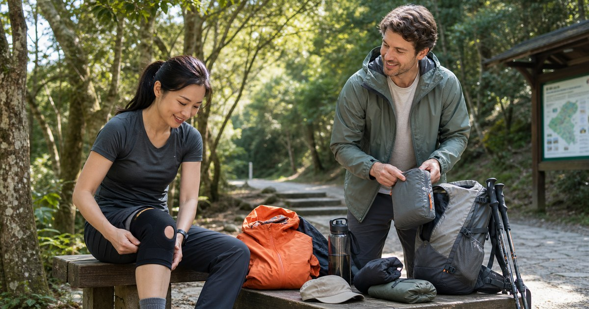

登山新手裝備順序：排汗衣、雨衣褲、護膝與輕量收納怎麼選
登山新手最需要的不是一次買齊全套裝備，而是先讓身體乾爽、雨天有備案、膝腰有支撐、物品能快速拿取。這篇整理半日健行到輕量步道的採買順序。

第一步先讓身體乾爽
Litume 意都美適合放在排汗衣、雨衣褲、保暖外層與戶外旅行用品的主軸。入門健行不一定要一次買高規格裝備，但貼身層和雨天外層要先處理。
排汗衣的任務是讓汗不要長時間貼在身上；雨衣褲的任務是遇到風雨時維持基本乾爽。這兩件事比風格更重要，也比拍照時看起來專業更重要。
- 半日郊山：排汗上衣、薄外套、輕量雨衣。
- 潮濕路線：雨衣褲、防滑鞋底、備用襪。
- 溫差路線：薄保暖層和可收納外套。
護具是支撐，不是逞強許可證
BELEX 和 Jasper 大來護具適合放在護膝、護腰、護踝等支撐用品的比較裡。這類用品不能被寫成治療或保證效果，真正合理的用法，是在長時間走路、下坡或日常支撐需求中，幫你多一層穩定感。
如果你本來就有疼痛、受傷或醫療狀況，請先詢問專業人員。裝備能改善使用體驗，但不能取代身體評估、訓練和路線選擇。
收納要讓雨衣、水、手機和小物快速拿到
北方狼、ANPING 安平和其他戶外店家適合補齊背包、收納袋、雨天備案和小配件。新手不需要一開始就買大容量登山包，半日路線更需要的是分層清楚、重量不要亂晃。
反光屋 FKW 則可放在清晨、傍晚或低能見度路段的提醒配件。尤其是從城市通勤接到步道入口時，能被看見本身就是安全配置的一部分。
- 外層快取：雨衣、帽子、毛巾。
- 中層穩定：水瓶、行動糧、保暖層。
- 內層保護：手機、證件、鑰匙、行動電源。
新手採買順序
建議不要用「一次到位」思維買登山用品，而是用路線難度和使用頻率逐步升級。先完成半日郊山的基本配置，再看自己是否需要長路線、過夜或更高階裝備。
- 第一輪：排汗衣、雨衣、帽子、水瓶、小背包。
- 第二輪：雨褲、護膝或護腰、登山杖、備用襪。
- 第三輪：更專門的鞋款、背包系統、保暖與長線裝備。
鞋襪與路線難度，也會影響裝備順序
雖然這篇主要談排汗衣、雨衣褲、護具與收納，但新手仍要把鞋襪和路線難度放進同一個決策。若路線只是平緩步道，不一定要立刻買重型登山鞋；若路面濕滑、石階多或下坡長，鞋底穩定與襪子摩擦就會變得更重要。
裝備不是越專業越好，而是要和下一次行程相配。先完成一兩條輕量步道，再回頭看自己最常不舒服的地方，是腳底、膝蓋、肩膀、汗濕還是雨天，下一次採買就會更準。
- 平緩步道：輕量、舒適、好走優先。
- 石階與濕滑路段：鞋底穩定與襪子摩擦要更重視。
護具選購前，先記錄身體反應
BELEX 與 Jasper 大來護具都適合放在支撐用品的比較清單中，但不建議看到別人戴就跟著買。更好的方式，是先走兩次簡單路線，記錄自己在上坡、下坡、休息後和隔天早上分別是哪裡不舒服。
如果是背包太重或鞋子不合，護具未必能解決根本問題；如果是下坡時不穩，路線、步伐和體能也要一起調整。護具可以提供支撐與提醒，但不能取代專業評估或讓你勉強挑戰超出能力的路線。
- 先記錄，再買護具。
- 有明顯疼痛或舊傷時，應尋求專業建議。
把每次步道當作下一次採買的測試
新手不需要一次買完整套裝備，因為你還不知道自己真正的痛點。第一次可能發現衣服太悶，第二次才發現雨衣放太深，第三次才知道水壺位置不好拿。每一次行程都能幫你排出下一次採買優先順序。
Litume 可負責服飾和雨備，北方狼與 ANPING 補齊收納與戶外小物，反光屋 FKW 處理低能見度辨識。品牌的角色分清楚後，裝備系統會更像逐步建立，而不是被清單推著買。
- 每次只補一到兩個最常發生的問題。
- 買完後下一次一定要帶出門測試。
FAQ
登山新手第一件裝備應該買什麼？
若從半日郊山開始，先處理排汗衣、輕量雨衣、水瓶與小背包。鞋款也很重要，但要依路線地形和自己的腳感選擇。 實際選購仍要回到你的交通方式、使用頻率、收納位置與商品頁規格，不建議只看單一品牌或單一功能。
護膝護腰是不是一定要買？
不一定。若有長時間走路、下坡不穩或支撐需求，可以列入比較；若有疼痛或舊傷，應先諮詢專業人員，不要只靠護具硬撐。 實際選購仍要回到你的交通方式、使用頻率、收納位置與商品頁規格，不建議只看單一品牌或單一功能。
雨衣褲和防潑外套差在哪裡？
防潑外套適合短時間小雨或城市移動，真正戶外遇雨時，雨衣褲通常更完整。選擇時要看路線、時間、天候和是否容易撤退。 實際選購仍要回到你的交通方式、使用頻率、收納位置與商品頁規格，不建議只看單一品牌或單一功能。
下一步建議
如果你準備開始半日健行，先把排汗、雨天、支撐和收納四件事處理好，再慢慢升級更完整的登山裝備。
重要警語
本文為一般選購與生活情境整理，不構成醫療、專業戶外訓練或安全保證。戶外活動請依天候、路線、個人體能與現場規範評估；涉及護具、防曬或雨具等用品，實際規格、價格、活動與庫存請以商品頁公告為準。
本文含品牌／商品導購連結；若你透過部分商品連結前往選購，Elite Fashion 可能取得合作收益。本文仍以編輯判斷與使用情境整理為主，價格、規格、活動與庫存請以商品頁公告為準。